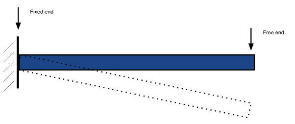
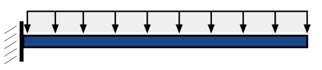
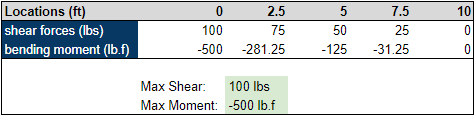
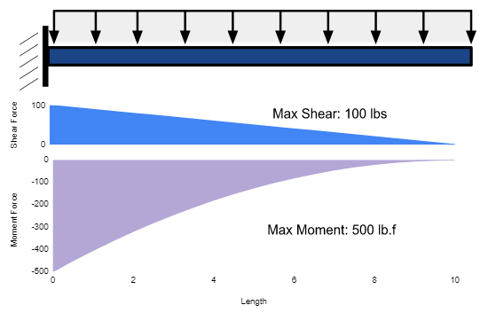
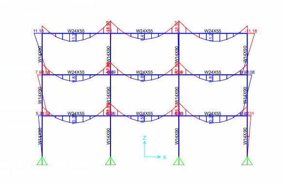
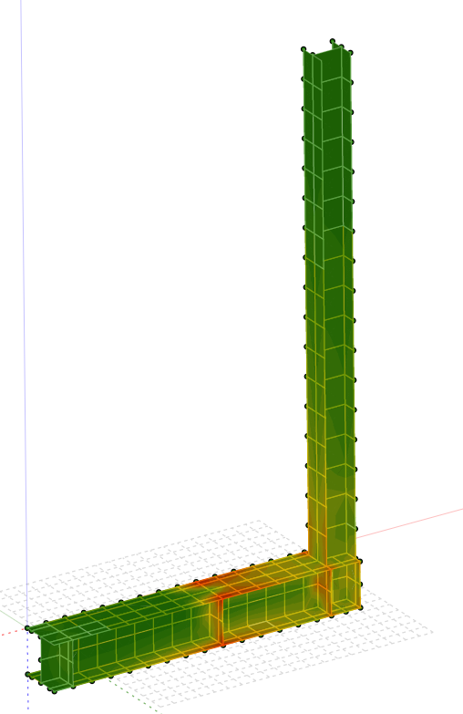

"Just use the query formula"
Data Visualization in Civil Engineering
Surely everyones heard of data visualization being an effective way to communicate findings in sales data, geographical data, medical data, and more. Visualizations can sometimes be seen as the final result of an analysis or the final product that will be delivered. In civil engineering, there are times where this can be the opposite.
For now, I’d like to solely give an example of visualization that is commonly used in civil engineering. As a matter of fact, this is one of the first things you learn if you were going for a degree in this study. We’ll start with a cantilever beam. A cantilever beam is a beam that is fixed on one end, and free on the other. Think of traffic lights that span across the street from a pole and/or refer to the figure below.

Next, suppose there is a distributed load across the top of this beam. Meaning that there is a continuous force acting across the entire span on this beam. Examples of distributed loads are in roof beams carrying the weight of the roof, floor beams carrying the weight of the floor, or a shelf filled with books. There’s constant pressure along the length of the beam. This is typically shown as it is below. The downward arrows represent the force. Them all being connected at the top shows its continuous, and therefore distributed.

Of course with every action (or force) there is an equal and opposite reaction. Therefore, we know that there are reaction forces that allow this beam to hold the weight. The shear force would be the sum of all the vertical forces acting on the beam. The reaction force at the fixed end, and the downward force along the entire beam. The bending moment is the sum of forces trying to bend the beam. Think of hanging a pencil off of a desk. Hold one side down to the desk and then press down on the free-hanging end. You could imagine the pencil will break somewhere in the middle. This is because the pencil can't withstand much bending and pretty much instantly snaps.
Apologies for the dullness, but let's get into an example. Suppose this beam is 10 feet long and there is a distributed load of 10 pounds per foot acting on the beam. We want to know how the shear and bending moment forces change at different points of the beam. We also want to know the maximum moment and shear force.
One way to show this data would be to calculate the values of the forces at every few feet and put it in a table, then call out the maximums. Don’t worry too much about the actual values.

This shows the values of the forces every 2.5 feet along the beam. Visualizing how this would affect the beam is a little difficult and probably not the ideal way. What if we use a diagram to show these values instead?

This, in my opinion, is far more effective in communicating the values of the forces along the beam. We can see that shear forces decrease linearly and the bending moment decreases almost exponentially. The maximum values are called out and it’s easier to see where the maximum forces occur in the beam. This is a pretty standard example of how data visualization can be helpful. Numbers in a table are too overwhelming while a graph, or diagram, paints a more easily digestible picture.
These are called Shear Force and Bending Moment Diagrams (SFD and BMD) and they are extremely common throughout the civil engineering field. We’re mainly concerned with the maximum and minimum values of the shear force and bending moments, but sometimes these diagrams can be used to optimize the design by showing areas where material can be reduced.
These diagrams are usually taught in parallel with the calculations needed to find the shear and bending moment values. The reason is because in civil engineering, the visualizations are sometimes a tool for the analysis itself, rather than the result of the analysis. Engineers use various types of 3D modeling and simulations to understand the behavior of structures under different load conditions. In the figure shown below, the moment diagram of all members would be used to check to make sure the structure could sustain the loads being applied to it.

Again, this shows a much more efficient way of checking the bending moment forces throughout an entire structure. If it was discovered that a certain member does not have the capacity to sustain the loads, we could simply increase the size of the member and check this visualization again. If we wanted to see the stress throughout a member to see exactly how it's affected, we could use softwares that would show a simulation similar to the one below.

Here we can see exactly where the stress is concentrated. There’s no need for coordinates or lengths along the beam because the simulation shows us. All of these examples can be applicable to any size building or structure that exists.
Visualization in civil engineering has been increasingly interesting to me lately. While I was studying this in college, I never paid much attention to the fact these examples are forms of data visualization. I just thought they were the process for analyzing a structure. It’s interesting to revisit the civil engineering realm and realize that all of these visualizations and simulations that are run to analyze buildings are all forms of data visualization.